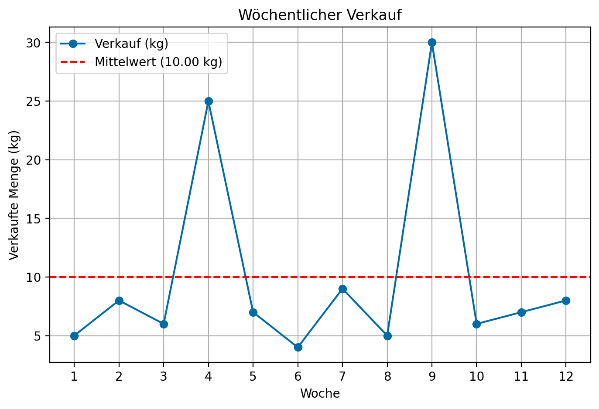

Übung 01
Materialbedarfsermittlung und Bedarfsmuster
Aufgabe 1: Materialbedarfsermittlung
Ein Fahrradhersteller in Münster plant die Produktion seines neuen E-Bike-Modells “UrbanCruiser”. Die Endmontage des Fahrrads erfordert verschiedene Komponenten, deren Beziehungen in der folgenden Stückliste dargestellt sind.
Struktur des “UrbanCruiser” (E):
- 1x Rahmen-Set (R)
- 1x Hauptrahmen (H)
- 1x Gabel (G)
- 2x Rad (W)
- 1x Antriebs-Set (A)
Produktionsplan:
Der Produktionsplan (Primärbedarf) sieht vor, in Periode 10 genau 50 “UrbanCruiser” fertigzustellen.
Stammdaten der Komponenten:
| Komponente | Lagerbestand | Vorlaufzeit (Perioden) |
|---|---|---|
| E (UrbanCruiser) | 5 | 1 |
| R (Rahmen-Set) | 10 | 2 |
| W (Rad) | 30 | 3 |
| A (Antriebs-Set) | 15 | 2 |
| H (Hauptrahmen) | 20 | 2 |
| G (Gabel) | 8 | 1 |
Ihre Aufgaben:
- Gozinto-Graph zeichnen: Zeichnen Sie die Produktstruktur als Gozinto-Graph.
- Materialbedarfsermittlung: Führen Sie eine Materialbedarfsermittlung durch. Berechnen Sie den Brutto- und Nettobedarf für jede Komponente.
- Bestellzeitpunkte: Bestimmen Sie die Bestellzeitpunkte für die Komponenten, um den Produktionsplan einzuhalten.
Lösung:
Tipps und wichtige Formeln
Vorgehensweise bei der Bedarfsermittlung
Die Materialbedarfsermittlung erfolgt top-down durch die Stücklistenstruktur, von der höchsten Dispositionsstufe (0) zu den niedrigsten.
- Stufe 0 (Endprodukt):
- Bruttobedarf: Der gegebene Primärbedarf aus dem Produktionsplan.
- Nettobedarf:
Nettobedarf = Bruttobedarf - Lagerbestand. Dies ist die Menge, die tatsächlich produziert werden muss. - Bestelltermin:
Bestelltermin = Bedarfstermin - Vorlaufzeit. Dies ist der Zeitpunkt, an dem die Produktion des Endprodukts starten muss.
- Nächste Stufen (Komponenten/Baugruppen):
- Bruttobedarf: Der Bruttobedarf einer Komponente leitet sich aus dem Nettobedarf der übergeordneten Baugruppe ab. Der Starttermin der Baugruppe wird zum Bedarfstermin der Komponente.
Bruttobedarf (Komponente) = Nettobedarf (Baugruppe) * Bedarfskoeffizient (Menge pro Baugruppe) - Nettobedarf & Bestelltermin: Werden für jede Komponente analog zur Stufe 0 berechnet.
- Bruttobedarf: Der Bruttobedarf einer Komponente leitet sich aus dem Nettobedarf der übergeordneten Baugruppe ab. Der Starttermin der Baugruppe wird zum Bedarfstermin der Komponente.
1. Gozinto-Graph:
Der Gozinto-Graph visualisiert die “geht-in-Beziehung” der Komponenten.
2. & 3. Materialbedarfsermittlung:
Wir berechnen den Bedarf rekursiv, beginnend bei der obersten Ebene (Dispositionsstufe 0).
Dispositionsstufe 0: UrbanCruiser (E)
- Bruttobedarf in P10: 50 Stück
- Lagerbestand: 5 Stück
- Nettobedarf in P10: 50 - 5 = 45 Stück
- Bestellzeitpunkt: P10 - 1 (Vorlaufzeit) = P9
Der Nettobedarf von 45 Stück für E wird zum Bruttobedarf für die Komponenten der nächsten Stufe.
Dispositionsstufe 1: Rahmen-Set (R), Rad (W), Antriebs-Set (A)
- Rahmen-Set (R):
- Bruttobedarf in P9: 1 * 45 = 45 Stück
- Lagerbestand: 10 Stück
- Nettobedarf in P9: 45 - 10 = 35 Stück
- Bestellzeitpunkt: P9 - 2 = P7
- Rad (W):
- Bruttobedarf in P9: 2 * 45 = 90 Stück
- Lagerbestand: 30 Stück
- Nettobedarf in P9: 90 - 30 = 60 Stück
- Bestellzeitpunkt: P9 - 3 = P6
- Antriebs-Set (A):
- Bruttobedarf in P9: 1 * 45 = 45 Stück
- Lagerbestand: 15 Stück
- Nettobedarf in P9: 45 - 15 = 30 Stück
- Bestellzeitpunkt: P9 - 2 = P7
Dispositionsstufe 2: Hauptrahmen (H), Gabel (G)
Der Nettobedarf von 35 Rahmen-Sets (R) wird zum Bruttobedarf für H und G.
- Hauptrahmen (H):
- Bruttobedarf in P7: 1 * 35 = 35 Stück
- Lagerbestand: 20 Stück
- Nettobedarf in P7: 35 - 20 = 15 Stück
- Bestellzeitpunkt: P7 - 2 = P5
- Gabel (G):
- Bruttobedarf in P7: 1 * 35 = 35 Stück
- Lagerbestand: 8 Stück
- Nettobedarf in P7: 35 - 8 = 27 Stück
- Bestellzeitpunkt: P7 - 1 = P6
Zusammenfassung der Bestellungen:
Komponente Bestellmenge (Nettobedarf) Bestellperiode
Hauptrahmen (H) 15 5
Gabel (G) 27 6
Rad (W) 60 6
Rahmen-Set (R) 35 7
Antriebs-Set (A) 30 7
UrbanCruiser (E) 45 9Aufgabe 2: Analyse von Bedarfsmustern
Ein Online-Shop für Kaffeebohnen möchte das Verbrauchsmuster einer speziellen Sorte analysieren, um die Lagerhaltung zu optimieren.
Die Verkaufszahlen (in kg) der letzten 12 Wochen liegen vor:
[5, 8, 6, 25, 7, 4, 9, 5, 30, 6, 7, 8]
Ihre Aufgaben:
- Grafische Darstellung: Stellen Sie die Zeitreihe grafisch dar.
- Durchschnittlicher Bedarf: Berechnen Sie den durchschnittlichen wöchentlichen Bedarf.
- Mittlere absolute Abweichung: Berechnen Sie die mittlere absolute Abweichung (MAD), um die Prognosegüte bei Annahme eines konstanten Verbrauchs (Mittelwert) zu bewerten.
- Störpegel: Berechnen Sie den Störpegel (Variationskoeffizient).
- Klassifizierung: Klassifizieren Sie das Bedarfsmuster basierend auf Ihren Berechnungen. Handelt es sich um einen konstanten, trendförmigen, sporadischen oder unregelmäßigen Bedarf? Begründen Sie Ihre Entscheidung.
Lösung:
Tipps und wichtige Formeln
Die wichtigsten Kennzahlen zur Bedarfsanalyse
Durchschnittlicher Bedarf (\(\bar{x}\)): Der Mittelwert der Nachfrage über den betrachteten Zeitraum. Dient als Basis für einfache Prognosen. \(\bar{x} = \frac{1}{n} \sum_{t=1}^{n} d_t\)
Mittlere Absolute Abweichung (MAD): Gibt die durchschnittliche absolute Prognoseabweichung an, wenn man den Mittelwert als Prognose verwendet. Ein Maß für die Streuung. \(MAD = \frac{1}{n} \sum_{t=1}^{n} |d_t - \bar{x}|\)
Störpegel (SP): Das wichtigste Maß zur Klassifizierung. Es setzt die mittlere absolute Abweichung ins Verhältnis zum Mittelwert und ist damit eine relative Kennzahl zur Beurteilung der Prognosegenauigkeit. \(SP = \frac{MAD}{\bar{x}}\)
Typische Grenzen für die Klassifizierung
- SP < 0,25: Konstanter / gleichmäßiger Bedarf (gut prognostizierbar)
- 0,25 \(\le\) SP \(\le\) 0,5: Trendförmiger oder saisonaler Bedarf (regelmäßige Schwankungen)
- SP > 0,5: Unregelmäßiger / erratischer Bedarf (schwer prognostizierbar)
- Zusatzkriterium für “sporadisch”: Wenn zusätzlich zum hohen SP viele Perioden einen Bedarf von Null aufweisen.

2. Durchschnittlicher Bedarf: 10.00 kg/Woche
3. Mittlere Absolute Abweichung (MAD): 5.83 kg
4. Störpegel: 0.585. Klassifizierung des Bedarfsmusters:
Visuelle Analyse: Die Grafik zeigt eine relativ stabile Nachfrage mit zwei deutlichen Ausreißern nach oben in den Wochen 4 und 9. Es ist kein klarer Trend (steigend oder fallend) und keine regelmäßige Saisonalität erkennbar.
Kennzahlenanalyse:
- Der durchschnittliche Bedarf liegt bei 10.00 kg.
- Die mittlere absolute Abweichung (MAD) von 5.83 kg ist im Verhältnis zum Mittelwert recht hoch. Sie zeigt, dass die einzelnen Werte im Schnitt stark vom Mittelwert abweichen.
- Der Störpegel ist mit 0.58 ein entscheidender Indikator. In der Literatur werden oft folgende Grenzen verwendet:
- SP < 0.25: Konstanter/glatter Bedarf
- 0.25 <= SP <= 0.5: Schwankender, aber noch regelmäßiger Bedarf
- SP > 0.5: Stark unregelmäßiger (erratischer) Bedarf
Fazit: Mit einem Störpegel von 0.58 liegt ein stark unregelmäßiger (erratischer) Bedarf vor. Die Nachfrage ist schwer prognostizierbar. Die beiden hohen Spitzen deuten auf zufällige, große Bestellungen hin. Ein einfacher Prognoseansatz wie der gleitende Durchschnitt oder die exponentielle Glättung würde hier wahrscheinlich zu hohen Prognosefehlern führen. Für solche Artikel sind Sicherheitsbestände oft die bessere Strategie als eine verbrauchsgesteuerte Disposition. Da es keine Perioden mit Null-Bedarf gibt, ist die Klassifizierung “sporadisch” weniger passend als “erratisch”.
Aufgabe 3: ABC-Analyse
Ein Unternehmen aus Duisburg möchte seine Lagerartikel klassifizieren, um die Management-Anstrengungen zu priorisieren. Die folgenden Daten für 10 Artikel sind verfügbar:
| Artikel-Nr. | Jahresbedarf (Stück) | Preis pro Stück (€) |
|---|---|---|
| 1 | 1.000 | 50,00 |
| 2 | 500 | 300,00 |
| 3 | 12.000 | 5,00 |
| 4 | 400 | 450,00 |
| 5 | 8.000 | 2,00 |
| 6 | 300 | 10,00 |
| 7 | 2.500 | 25,00 |
| 8 | 15.000 | 1,00 |
| 9 | 700 | 150,00 |
| 10 | 5.000 | 8,00 |
Ihre Aufgaben:
- Jährlichen Verbrauchswert berechnen: Berechnen Sie für jeden Artikel den jährlichen Verbrauchswert.
- Rangliste erstellen: Erstellen Sie eine Rangliste der Artikel nach ihrem Verbrauchswert in absteigender Reihenfolge.
- Prozentuale Anteile berechnen: Berechnen Sie den prozentualen Anteil jedes Artikels am Gesamtverbrauchswert und an der Gesamtmenge aller Artikel.
- Kumulierte Anteile berechnen: Berechnen Sie die kumulierten prozentualen Anteile am Wert und an der Menge.
- ABC-Klassifizierung: Teilen Sie die Artikel in die Klassen A, B und C ein. Verwenden Sie typische Grenzen (z.B. A-Güter: ~80% Wertanteil, B-Güter: ~15% Wertanteil, C-Güter: ~5% Wertanteil).
- Grafische Darstellung: Stellen Sie das Ergebnis grafisch in einem Diagramm dar (Lorenz-Kurve).
Lösung:
Tipps und wichtige Formeln
Das Prinzip der ABC-Analyse
Die ABC-Analyse basiert auf dem Pareto-Prinzip (80-20-Regel), das besagt, dass oft ein kleiner Teil der Ursachen für einen großen Teil der Wirkung verantwortlich ist. Übertragen auf die Lagerhaltung bedeutet das: Ein kleiner Prozentsatz der Artikelpositionen verursacht einen großen Prozentschaft des gesamten Kapitalbedarfs (Verbrauchswert).
Schrittweises Vorgehen
- Verbrauchswert berechnen: Das ist die wichtigste Kennzahl.
Verbrauchswert = Jahresbedarf * Preis pro Stück - Sortieren: Die Artikel absteigend nach ihrem Verbrauchswert sortieren.
- Prozentuale Anteile berechnen: Für jeden Artikel seinen Anteil am Gesamtwert bestimmen.
Wertanteil (%) = (Verbrauchswert / Gesamtverbrauchswert) * 100 - Kumulieren: Die prozentualen Wertanteile von oben nach unten aufsummieren.
- Klassen zuordnen: Die kumulierten Wertanteile nutzen, um die Klassen A, B und C zu definieren. Die Grenzen sind nicht starr, aber typische Werte sind:
- A-Güter: die Artikel, die zusammen ca. 70-80% des Wertes ausmachen.
- B-Güter: die nächsten Artikel, die zusammen ca. 15-20% des Wertes ausmachen.
- C-Güter: die restlichen Artikel mit den geringsten Wertanteilen (ca. 5-10%).
Tabelle zur ABC-Analyse:
Artikel-Nr. Jahresbedarf Preis Verbrauchswert Wertanteil (%) Mengenanteil (%) Kum. Wertanteil (%) Kum. Mengenanteil (%) Kum. Artikelanteil (%) ABC-Klasse
0 4 400 450 180000 26.41 0.88 26.41 0.88 10.0 A
1 2 500 300 150000 22.01 1.10 48.42 1.98 20.0 A
2 9 700 150 105000 15.41 1.54 63.83 3.52 30.0 A
3 7 2500 25 62500 9.17 5.51 73.00 9.03 40.0 A
4 3 12000 5 60000 8.80 26.43 81.80 35.46 50.0 B
5 1 1000 50 50000 7.34 2.20 89.14 37.67 60.0 B
6 10 5000 8 40000 5.87 11.01 95.01 48.68 70.0 C
7 5 8000 2 16000 2.35 17.62 97.36 66.30 80.0 C
8 8 15000 1 15000 2.20 33.04 99.56 99.34 90.0 C
9 6 300 10 3000 0.44 0.66 100.00 100.00 100.0 CInterpretation der Ergebnisse:
- A-Güter: Die Artikel 4, 2, 9 und 7 sind A-Güter. Sie machen 40% der Artikelpositionen aus, binden aber rund 73% des Gesamtwertes. Diese Artikel erfordern die größte Aufmerksamkeit (z.B. genaue Bestandsführung, häufige Bestellungen, gute Lieferantenbeziehungen).
- B-Güter: Die Artikel 3 und 1 sind B-Güter. Sie stellen die nächste Gruppe dar und erfordern eine standardmäßige Behandlung.
- C-Güter: Die restlichen Artikel (10, 5, 8, 6) sind C-Güter. Sie haben einen sehr geringen Wertanteil, aber einen hohen Mengenanteil. Hier können vereinfachte Dispositionsverfahren (z.B. hohe Sicherheitsbestände, seltenere Bestellungen) angewendet werden, um den Verwaltungsaufwand zu reduzieren.